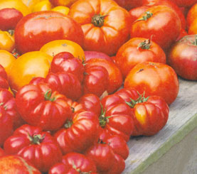
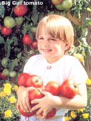
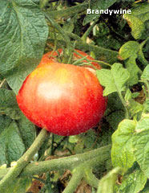
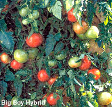
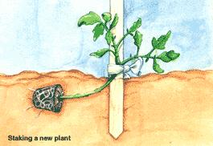
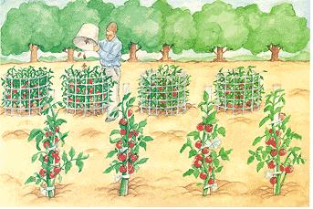
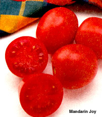

By John Vivian.
"Only two things that money can't buy:
That's true love and homegrown tomatoes."
Guy Clark
It is that elusive, piquant aroma that truly differentiates such a homegrown fruit from store-bought. Only so long as a picked fruit remains at the plant's ideal growing temperature range of 65°F to 85° F in open, oxygen-rich air will it remain a living thing that sweetens its flesh and continues to ripen its seed rather than soften, sour and begin to decay.
Modern tomato breeders, growers and shippers have gone far in bringing a convincing approximation of fresh tomatoes to grocery shelves. Just a couple of decades ago, about all we could get were bred-to-be-cube-shaped, slab-sided winter tomatoes that were (and still are) field-grown in Mexico. They were picked while still green, semitoxic and tasteless, then packaged in plastic coffins, wrapped in cellophane shrouds, and gassed with an excess of ethylene gas fumes to redden their skins during their truck ride to northern markets.
Today's premium "Euro-style" greenhouse-grown fruit is left under gro-lites to turn color on the vine and picked along with stem-end green-leaved calyx, russ-stem and all in multiple-fruit clusters. This is all done to convince buyers that they are truly vine-fresh, though they are at least several days from the vine, their time spent in 70%-humidified, low-oxygen refrigeration.
The newest golfball-to-baseball-sized cluster-bearing fruit are bred to redden through to the core and develop a degree of sweetness and a soft internal texture. But since recent (mid-'90s) genetic engineering has improved shelf life, all of it is encased in tough enough skin (epidermis) and flesh (pericarp) to withstand shipping conditions that would turn an old-time vine-ripened garden variety to mush. In a period of several days to three weeks of suspended animation during refrigerated shipping (and a week to another month of store display), they lose the spark of life and the ability to truly ripen seed or flesh any further, along with nearly all of their natural fragrance.
The typical supermarket "fresh" tomato, though vastly improved in shelf life, appearance and eating quality over the past few years, is still DOA - a corpse. It holds its gene-spliced shape, color and superficial appearance of freshness, but gradually loses the flavor, nutrients and, above all, the intoxicating aroma of the living thing.
Last winter, we went out and purchased a beautiful, fully-ripened cluster of small, local greenhouse-grown hydroponic toma toes and put them in the crisper of the fridge. In two weeks, the fruit seemed unchanged from when we brought them home. The calyx - the little round of green leaves in the fruits center - had withered and was beginning to develop white specks of mold. In another week, the stems were dry, but the fruit was un changed except for a slight softness. Other produce of the same age, such as bell peppers and celery, were beyond spoiled. But the tomatoes still appeared fresh-ripe red - and they were tasty even as we discarded their shopping trip companions.
It was creepy. Ours were a month from the store (who knows how long from the vine) and still looked fresh. That's unnatural, folks, if you think about it. In another two weeks, they were reasonably firm, red and unblemished on the outside, but finally softened to a sour and unpalatable jelly inside. The bizarre Dorian Grey life of that tomato and many others we tested was just part of the information we needed to launch a private war against genetically altered food (see "Brave New Food," MOTHER March/April 2000). As with all garden battles, the first steps to victory are made towards better seed.
The original tomato: Lycopersicon esculentum, of the family Solanaecae, was (and still is) the small, hollow/seedy, fuzzy-skinned and barely edible fruit from vines growing along the coast of what today is modern Peru. Birds and sea turtles carried the seed to the Galapagos Islands out in the Pacific and across the equator to Mexico, where the ancient Mexicans reselected and bred them with the local tomato or husk-tomato. In the mid-16th century, Spanish conquistadores took the seed to Europe where the plants' membership in the often - toxic belladonna family branded them poisonous. They also earned a reputation as an aphrodisiac (thus the name "love apple"). Returned to the Americas with early colonists, they remained a novelty until Thomas Jefferson recognized the edibility of the fruit and began selecting and breeding plants for better eating quality.
Two hundred years of continued reselection and a generation of hybridizing and genetic engineering have brought us a huge variety of plant types and fruit characteristics, from grape-sized to supergiants. Reliability varies among open-pollinated Heirloom seeds, well-accepted cross-pollinated hybrids, and the modern gene-spliced varieties selected from unknown breeders and name seedhouses alike. Read literature about seeds and started plants carefully before ordering. Though the list of our favorite varieties (beginning on the right) will get you off to a good start, you'll have to investigate the best seed for your specific location.
If, like us, you have doubts about the wisdom of modern gene-splicing (attaching a gene from a cousin such as a potato, corn or wild tomato), you can pick from scores of open-pollinated heirloom varieties from many lands and cultures, or "old-fashioned" hybrids from an earlier era. It is always an option, however, to subscribe to cutting-edge plant gene science. One recent discovery is the Mandarin Joy Hybrid Oriental Tomato VFNASt., a 72-day, sub-acid fruit specifically engineered for stir-frying. It yields massive crops of unifonn fruit on a self-size-limiting determinate plant.
VFN resistance has been available to be bred in naturally for decades. Mandarin Joy is gene-spliced to ignore five of the seven plant diseases to which resistance can be bred into tomatoes. Following is the resistance code of these largely viral diseases. The list will expand as more diseases are brought under control; bacterial wilts may be just a few splices away.
V verticillium wilt
F fusarium wilt
FF fusarium wilt races 1 and 2
N nematodes
T tobacco mosaic virus
A alternaria stem virus
St stemphylium gray leaf spot
To modern seed men, varieties that retain a tomato's native perennial and vining growth pattern are said to have an "indeterminate" growth habit. Long stems produce two or three nodes, or "joints", between flower sets. The plants can generate new stems from any leaf axial (where leaf meets stem) or produce root growth from any node, establishing a new plant. Overgrowth of new roots or rank foliage can limit fruit production. Flowers and fruit can be produced indefinitely, but to have best fruit production in the home garden these potentially perennial vines must be treated as the annuals they will prove to be, even under a light frost. Nodes must be kept away from soil, and indeterminates must be pruned of "suckers", or new stems that want to grow from every leaf axil. They can't root if grown flat on plastic film or staked to 6' poles.
Indeterminates are best for home gardens, where the crop can be harvested over several week's time. In homes equipped with gro-lites, rooted cuttings can be taken inside at season's end. The plants will grow and produce all winter, and growing ends can be transplanted out again in late spring.
Early in this century, modern "determinate" tomato plants came about, ones producing flowers and smallish fruit at every node with a flowering terminal node at about 3' plant length (or height if staked). Small fruit mature faster and all at the same time on most determinates. The many varieties are good for one-shot harvest and are commercial favorites.
Another new development is the "Indeterminate Short Internode", or ISI, series that combines the unlimited fruiting characteristic of indeterminates with the limited growth habit of determinates. Growing 4' to 4.5' high (caged or staked), they flower and produce as long as the weather holds up. The yellow, pink and red 5- to 7-ounce-sized fruit, along with the red and gold cherry varieties in the series, also carry resistance to verticillium and fusarium wilts. Sure to be home-garden favorites.
Every adventurous home gardener tries a few new tomato varieties each year, but relies for the main crops (especially for canning) on varieties that have produced well over the years in their soil and under their growing habits. For us, in gardens from Washington state to Pennsylvania to central and upper New England, the most consistently reliable varieties have been two old (first-generation, nongenetically engineered) hybrids.
Early crop: 70-day Jet Star, originally from Joseph Harris, now from Harris-Moran and retailed to home gardeners by Totally Tomatoes. These seeds produce excellent crops of high-quality fruit in the coldest and wettest of early spring weather. They are big, ripe all the way through when red on the outside, and not as sour as most early varieties. It's a skimpy-leafed indeterminate that grows well on a 4' stake.
Main Crop: 78-day Big Boy hybrid from Burpee. Big, reliable, good crop from a not-too-vigorous indeterminate hybrid. Perfect skins, meaty 16-ounce weight with superb flavor and the best aroma of any tomato variety known.
Neither the Jet Star nor the Big Boy carries much inborn disease resistance. and each has been replaced with descendants with VFN. Handy if you need them, but none has been as reliable or flavorful for us as the originals. If you live near town and other gardens, you might do better with similar varieties that have bred-in disease resistance. Try Harris Moran's Supersonic Hyb VF (75 days) or Jetsetter Hyb VFFNSt. A, a 64-day indeterminate with modern high-disease resistance, and/or Burpee's Big Girl Hyb VF (78 days), an indeterminate main-crop producer of huge crops of 1 pound or more, lovely red-through fruit with a flavor nearly equal to its Big Boy brother. For tomato disease-loaded soils, we'd suggest trying Schumway's own Early Goliath Hyb VFFNTASt., which produces at an extraordinarily early 58 days, or its senior, Goliath Hyb VFFNTA St., a 65-day main-crop tomato. Both are vigorous indeterminates that ignore diseases that decimate older varieties.
If you prefer growing nonhybrid, open-pollinated heirloom tomatoes, and have a long growing season and disease-free land, we recommend the finest-flavored tomato ever found: Brandywine. Its origins are under debate, and the name is applied to several different varieties; look for the 90-to 100-day extra-large, light rose-pink fruit growing on a potato-leafed, indeterminate plant. If your season is short, try the original Beefsteak, an indeterminate plant type, producing huge (2 pounds is not unusual), irregular and flattened pink fruit, with a lovely, naturally-sweet subacid flavor. Sliced thick on a hamburger, it runs all over your hands but is wonderful. When I was very young and living with my grandparents in Indiana, we ate Beefsteak slices with salt, pepper and sugar. Along with Herb Shriner and Larry Bird, that snack is another of Indiana's great contributions to American culture.
For salad tomatoes we have found none more reliable than old-timer Tiny Tim, a 60-day determinate, thick stemmed (16"-high, bush-like) plant that produces masses of 3/4" fruit that taste the way tomatoes should.
To outdo the neighbors with the first tomatoes of the season, you can start seed a good eight to ten weeks or more before the last frost in your locale. You'll need half-bushel containers for each plant, HID gro-lites, and patience to jiggle the little yellow flowers every morning before 10 a.m. to self-pollinate for the earliest fruit.
In competition with hunger rather than the neighbors when we began homesteading back in the '60s, my wife and I started tomatoes the same way my grandfather had on his Indiana home place. Six weeks before last frost, he saved seed from favorite open-pollinated (nonhybrid) varieties, but always ordered new seed of the best-sounding varieties from catalogs or packets from the Farm Co-op or some store display. In late winter, he would begin indoor planting. Starting soil was mixed from equal parts rich poultry-litter compost, vermiculite and peat moss, with a scattering of ground limestone to sweeten it. It was ovenbaked at 300°F, till an average-sized potato in the middle of the mix was cooked through. This was to sterilize soil to prevent "damping off," when soil- or airborne fungus girdles young seedlings at damp-soil level. The mix was packed into egg cartons, the seed planted 1/4" deep, and the egg-carton starting trays put in shallow metal baking pans. The pans were set on a flat board wound with soil-heating cable that warmed the soil to encourage rapid germination. In the tin trays, we watered plants from the bottom until seed sprouted about a week and a half later.
Today I use purchased sterile, chicken litter-based starting medium and Canadian peat pots rather than home mix and egg cartons - though you can still mix and sterilize your own. And you can save even more cash by getting (from most mail-order seed houses) a little machine that presses plant-growing containers from wet newspaper (use an awl to punch a few holes though the sides of each cup to allow young roots to penetrate easily).
Some gardeners maintain a layer of bone-dry mineral soil supplement (perlite or vermiculite) around stems as they grow. Lacking a moist growing medium at soil level, stems will not become infected with damping-off fungus.
Place the started seeds in open, moving air by a sunny window or under fluorescent lamps until seedlings have at least two pair of jagged, true leaves above the first rounded, cotyledonous leaves. Then transplant the most robust plants (paper or egg-carton cup and all) into coffee cans with hole-punched bottoms or to large-size peat pots of mix. Then transfer to a gro-lamp or outdoors to a glass window-topped cold frame. Built up against the ever-warm kitchen wall, the plants will "harden off' and get used to normal outdoor temperature/sun cycles.
After any chance of frost, set determinate seedlings out in well-prepared soil in rows a yard apart, with plants 2 1/2' apart in each row. When planting, strip lower leaves. Bury the root and most of the bare stem straight, 2" under in the garden soil. To encourage the plant to grow vertically, bend the leafed top up (gradually so it doesn't snap) at 90° and hammer a 5' stake in beside the growing tip. Place a side dressing of Chilean seabird-guano superphosphate around the plants' roots then and every month thereafter. Roots will grow unseen from all along the stripped stem, and the exposed stem will begin growing up. Tie loosely every 3 inches with strips of old rag. As you see suckers sprouting out of leaf axils (not the flowering spikes that grow from midstem), pinch them out.
When rain begins getting scarce in July, lay soaker hoses along the rows and mulch soil 6" deep with leaves or old hay. Turn the soakers on when unmulched soil begins looking dry a half shovel-blade down. After 60 to 80 days, each stake will hopefully support a column of evenly-ripening - fruit most of it destined for the kitchen on canning days.
Plant "rank-growing" indeterminate varieties three to each crib in a row of 4' high circles of fence wire lined up 2' apart at the top of the garden. Plant their roots inside the circle. They too get a monthly feeding of superphosphate all around the wire. Place living compost of mowed grass, pulled weeds, garden trimmings and trash inside each circle and tie the plants to the wire. Let side stems grow semiwild. By summer's end, the wire will be buried in a jungle of tomato vine. Expose ripe fruit to the sun by pruning away covering foliage, and har vest till frost. Well before then, nip growing tips off and make sure the still-green fruit gets as much sunlight as possible.
These tomato hedges will be the source of your green tomatoes (use only the blemish-free). Wrap them in newspaper and let ripen on the cold back porch. When they show a touch of pink, transfer them to a sunny windowsill. We often have still-ripened tomatoes in the green salads served on Thanksgiving Day. Those green tomatoes that threaten to rot can be tossed into the fridge or the next batch of green tomato relish - sweet or sour depending on the cook's mood that day.
No food plant responds more satisfactorily to hydroponic culture (inside, under high-powered lights, fed specially concocted nutrient solutions) than tomatoes. The Whippersnapper variety, from Johnny's Selected Seeds, turns out up to 100 succulent. 1"-oblong fruit per plant in only 52 days; Johnny's Sun Gold produces clumps of cherry tomatoes in 57 day. Modern greenhouse hybrids from Europe or Israel such as cool-climate Cobra, high temperature-tolerant Abigail or clump-bearing, long-keeper Camelia, all from Stokes Seeds, produce 7- to 8-ounce fruit, although seed is gene-spliced and expensive (up to 5 cents per seed).
Hygiene is crucial to hydroponics. Just one pregnant whitefly or gray leaf mold spore can introduce a plague. Scrub groroom surfaces and furnishings with a strong, environmentally friendly disinfectant. Boil, steam or disinfect all tools, containers, growing medium and water. If possible, filter incoming air. Keep humidity low to discourage spread of disease, and maintain room temperature at 65°F nights and 80°F days.
Growing media adapted to the (simplest) flood-and-drain method of feeding and watering plants are cubes of rock wool, kiln-fired shale spheres from Germany (Hydrox) and ground coconuthusk fiber (choir) sold by hydroponics supply retail outlets and by mail.
Along with sauerkraut and sour vinegar pickles, tomatoes are one of the few garden products that can be preserved safely by boiling the canning jar (for an hour or less if directed by canning recipe) in a simple hotwater bath (as well as in the higher temps of a pressure canned.
But be on the safe side. Modern tomatoes have been bred for diminished acidity since the 1940s. Many are too bland to develop sufficient natural acetic acid to protect the preserved product against deadly (and often totally hidden) botulism. Always follow a recipe from a modern (late 1980s or younger) canning manual. Unless otherwise directed in your canning recipe, be sure to add 1/4 teaspoon citric acid or 1 tablespoon of lemon juice for each final pint of tomatoes or tomato product prior to final cooking. And to double the safety margin, boil each jar of canned product for at least 15 minutes after it is opened and before it is served. Then scrub the canning jar and lid parts well in hot soapy water before storing.
Many small firms now offer organic nutrients made from such natural ingredients as bat manure, fish meal, seabird guano, rock phosphates and seaweed meal. They all assay to firm percentages (of 2% to 10%) and are odorless. The widest variety we know of is offered by Worm's Way. Or you can invest in a TDS (Total Dissolved Solids) meter and an NPK tester. Make up your own solutions by soaking/cooking compost, worm castings from a worm-powered garbage digester plus rock minerals, blood meal and other goodies.
You will need an aquarium-type water heater and air pump, tubing and airstone to warm and oxygenate the solution along with a delivery/recovery/recycling system. You can hand-feed a few tomato plants in double-bottomed pots or plastic-mesh bags of choir hung over a catch basin, or grow dozens in a fully automated outfit, such as Light Manufacturing's Living System; conning on an auto-timer, it circulates and recovers nutrients to one or several dozen self-draining go-pots of any size. All you do is test and renew or replace the solution as necessary.
Finally, you must invest big bucks in high-intensity discharge (HID) lamps. Fluores cents or incandescent golamps even large banks of them - are too weak to grow tomatoes (we've tried many times). HIDs are arc lamps of two radiation values: metal halides make a blue light and are best for green plant growth. High-pressure sodium lamps are yellow and best for blooms and fruit. You can get them with the heavy ballast and glass-shielded metal housing they need to function safely ...from 175 watts able to sustain 4 square feet ($150) to thousand-watters able to light 100 square feet ($500). Light Manufacturing was the first to put one of each (400-watters) in a single reflector.
Tomato blossoms are self-fertile, but you must play buzzy bee and get pollen to egg for them. Use a small paintbrush or electric toothbrush to vibrate mature, open blossoms between 10 a.m. and noon each day. Then, keep nutrient solution topped up and lights on ten to 12 hours day, and wait for your hydroponic tomatoes to ripen.
After a hard frost, pull poles and cut out wire fence circles, spread the compost out on the soil, and wait for a sprinkly fall day. With the 1/2"-bore garden hose ready to water down the borders, sprinkle the upwind edge of the tomato-plant leavings, corn stalks and other garden trash with kerosene, and fire it off to kill disease and bugs and turn the plant material into readily available ash for next year's crops. This century-old technique hasn't changed a jot.
Test for pH each fall and add lime if needed. Hand-cultivate under tomato plants and use the wheel hoe between rows all spring; spray on Bt after heavy rains to deter hornworm and other caterpillars; use a mix of pyrethrum and rotenone if beetle or bug damage becomes apparent, and apply powdered sulfur to stop fungus if weather gets too humid. Be conscientious about using soaker hoses and calcium emendation when soil tests indicate the need. This is essential - and the only way - to deter blossom-end rot. This year for the first time, we have big squares of red-colored landscape fabric to spread under the best plants. This extra bit of effort produced a bonus tomato for every four on the vine.
Name me an easier way to boost true love by 25 percent.
Related info:
Saving Seed, Seed Sterilization, Dehybridizing
|
 |
|
 |
|
 |
 |
 |
|
 |
 |
|